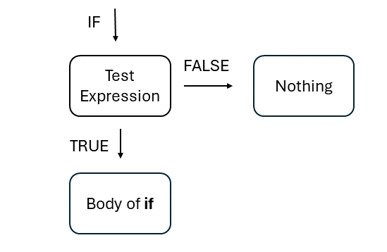

Chapter 1 Fundamentals
In this Chapter you will learn the user interface and basic functions in R. The user interface, as well as the basic functions for mathematical calculations. Further, you will be introduced to one of the most important logical operations: the if else function. The goal of this chapter is to give you an overview of RStudio and to give you a feeling and intuition for R by introducing you to mathematical concepts you already know. Do not forget, nobody is perfect, everyone has problems in the beginning and they can be frustrating, but that is most normal thing, when learning a new programming language. Have fun!
1.1 Getting familiar with RStudio and establishing a Workflow
1.1.1 The user interface
RStudio has four main components and each of them has a purpose:

On the top left you can see the Source window. In this window you write and run your code. The console opens after you choose, which type of Script you want to use:
The standard R Script (
Ctrl + Shift + N): In this file you can just write your code and run it. You can also make commenting lines with putting a#in front of it.The R Markdown File: In contrast to the standard R Script not everything written in a R Markdown File is automatically considered as Code (if not written after an
#). A R Markdown File has options to design an HTML Output and a PDF Output. This can increase your efficiency in terms of working with partners. Further, you can write your code in chunks and have plenty options to work with those chunks. In QM and AQM you will exclusively use R Markdown and over time you will see the advantages of R Markdown.On the top right you can see the Environment. Here you have an overview over all the objects currently loaded in your environment. You will learn more about objects later in the course.
On the bottom left you have the Console: This is where the results appear once you execute your R-code. You can also directly type R-code into the console and execute it. However, we cannot save this code which is why we usually work in the Editor.
On the bottom right you can see the Output: Plots (if you use the standard R Script) and other things will appear here, don’t worry too much about it for the moment.
1.1.2 How to design it according to your preferences (optional)
You can change the appearance of
RStudio:Tools > Global Options > Appearance. Here you can change the zoom of the Console, the font size of the your letters and the style of your code. Further, you can change RStudio to a dark theme. Play around with it and find out how it is the most comfortable for you and of course you can change it over time.You can change the Pane Layout meaning where the four components of RStudio should be:
RStudio:Tools > Global Options > Pane Layout.You should use key shortcuts. There are pre-installed short-cuts of RStudio, which are really helpful. You should get familiar with them.
Tools > Key Shortcut Helpsor directly withCtrl + Shift + K. You can add your own Key Shortcuts and we will do that in this course.
1.2 Lets get started: R as a fancy calculator
1.2.1 Mathmetical Operations in R
You can use R for basic calculations:
## [1] 2## [1] 0## [1] 1## [1] 1## [1] 1.414214You can use R also for TRUE/FALSE statements for logical statements via the comparison operators:
>greater than<smaller than==equal!=not equal>=greater than or equal to<=less than or equal to
## [1] TRUE## [1] FALSE## [1] TRUE## [1] TRUE## [1] FALSE## [1] TRUEYou can also use logical operators: - & element-wise AND operator. It returns TRUE if both elements are true - | element-wise OR operator. It returns TRUE if one of the statements is TRUE - ! Logical NOT operator. It returns FALSE if statement is TRUE
## [1] TRUE## [1] TRUE## [1] FALSE1.2.2 Using Commands
For more advanced operations you can and should use functions. Functios are mostly a word with brackets. Within a function, there are so called arguments. These arguments specify the function and give it the information it needs + optional information.
e.g.
sqrt(x)taking the square root,xis any number.exp(x)the constant e,xis any number.mean(x)for the mean,xis any number.median(x)for the median,xis any number.
sqrt(x = 36) #square root
exp(x = 0) # exponential of 1
print("U can stay under my umbrella") #with this command you can print what you want I explicitly choose easy examples, but sometimes commands can be complicated, because they demand special inputs. To get help, our first step should be to ask R itself:
You can put a question mark in front of a function and execute it. In your output under the tab “Help” an explanation with examples will pop up and explain the function.
You can also call the help() function and put the function you want to learn about without brackets in the help() function.
1.2.3 Assigning objects and printing them
Most of the time you will store your results in objects.
You can do so by using the
<-operator. Afterwards you can work with the objects. Let us assign numbers to out objects.The objects will be saved and you can see them in your environment.
## [1] 11We can then go on work with the content of the objects.
For beginners, let us add the object Pizza and the object Cola together.
We can also save the result of those object in a new object and work with this object and this can go on forever technically.
## [1] 11## [1] 1211.2.4 Vectors
In R a vector contains more than one information.
- You use the
c()command, and divide the information with a,. Let us compare food prices:
## [1] "Pizza" "Kebab" "Curry" "Fish" "Burrito"## [1] 7.5 6.0 8.5 3.0 11.0## [1] 3.5 3.0 4.0 2.5 3.0Now we can calculate the prices for a decent meal in one step by adding the two vectors together. The vector prices_combined will give us the prices for a meal plus a cola:
## [1] 11.0 9.0 12.5 5.5 14.01.2.5 Object Classes
Objects can contain information of different data types:
| Numeric | Numbers | c(1, 2.4, 3.14, 4) |
| Character | Text | c("1", "blue", "fun", "monster") |
| Logical | True or false | c(TRUE, FALSE, TRUE, FALSE) |
| Factor | Category | c("Strongly disagree",``"Neutral",``"Agree") |
For data analysis commands sometimes require special object classes. With the class() command we can find out the class. And with as.numeric for example we can change classes by assigning it to itself, by it is common to assign it to a new object:
## [1] "numeric"## [1] "character"## [1] "numeric"We can also change the classes of variables. To do so, we can use as.factor(), as.numeric(), as.character() and so forth. You can do that for every class. Let us change the cola_prices to a vector.
- To do so, we change call
as.character()and put the object in it. Then we assign it to another object calledcola_prices_character. This object will have the class"character".
#We want the cola_prices vector to be a character
cola_prices_character <- as.character(cola_prices)
#Checking it
class(cola_prices_character)## [1] "character"## [1] "3.5" "3" "4" "2.5" "3"1.2.6 Matrices
1.2.6.1 Making Matrices
There are different ways of building a matrix. Let us start by just binding the vectors as columns together. You can do that cbind() if you want to bind columns together. rbind() is therefore the command to bind rows together.
You have to call
cbind()and include the vectors you want to bind togetherThe same with
rbind()
price_index <- cbind(food,
prices,
cola_prices) #We bind it together
print(price_index) #We print it ## food prices cola_prices
## [1,] "Pizza" "7.5" "3.5"
## [2,] "Kebab" "6" "3"
## [3,] "Curry" "8.5" "4"
## [4,] "Fish" "3" "2.5"
## [5,] "Burrito" "11" "3"#Let's do the same by binding the rows together
price_index2 <- rbind(food,
prices,
cola_prices) #We bind it together
print(price_index2) #We print it ## [,1] [,2] [,3] [,4] [,5]
## food "Pizza" "Kebab" "Curry" "Fish" "Burrito"
## prices "7.5" "6" "8.5" "3" "11"
## cola_prices "3.5" "3" "4" "2.5" "3"We can also generate a matrix by simulating it. There are a lot of things to care about, simply because a lot is possible:
You first call the matrix() command.
The first argument is an interval of numbers. These are our total observations if you want.
The second and third argument are our number of rows
nrow()and our number of columnsncol(). If you multiply them, they have to result in the number of observations you defined before. We have 20 numbers and 4 multiplied by 5 is 20, thus this is fine.Lastly you have to define if the numbers should be included from left to right, thus by row or if they should be ordered from top to bottom. We go through both examples and then it should become clear.
The
dim()command is helpful, because it shows us to inspect the dimensions.
# Create a matrix
matrix_example <- matrix(1:20, nrow = 4, ncol = 5, byrow = T) #
# Checking it
print(matrix_example)## [,1] [,2] [,3] [,4] [,5]
## [1,] 1 2 3 4 5
## [2,] 6 7 8 9 10
## [3,] 11 12 13 14 15
## [4,] 16 17 18 19 20## [1] 4 5# What happens if byrow is set to FALSE?
matrix_example2 <- matrix(1:20, nrow = 4, ncol = 5, byrow = F)
# Checking it
print(matrix_example2)## [,1] [,2] [,3] [,4] [,5]
## [1,] 1 5 9 13 17
## [2,] 2 6 10 14 18
## [3,] 3 7 11 15 19
## [4,] 4 8 12 16 20## [1] 4 51.2.6.2 Working with Matrices
We want to work with matrices. The first tool to learn is how to inspect the matrices:
First, you call the matrix. In our example, matrix_example with square brackets.
In these brackets you can call single rows by entering the number of the row you want to inspect, and then you put a comma behind it to signal R that you want to have the row.
If you put a number behind the comma, you tell R to give you the column with the number.
If you want a single number then you have to define a row and a column.
#Let us get used to work with objects
row <- 1
column <- 1
#Printing it
print(object1 <- matrix_example[row, ]) #printing the first row## [1] 1 2 3 4 5## [1] 1 6 11 16## [1] 1## [,1] [,2] [,3] [,4] [,5]
## [1,] 1 2 3 4 5
## [2,] 6 7 8 9 10
## [3,] 11 12 13 14 15
## [4,] 16 17 18 19 20## [1] 4## [1] 5## [1] 4 51.2.7 Data Frames
The next type of data storage are data frames. These are the standard storage objects for data in R. The reason is simple, matrices are only able to contain one type of variables (numeric, character, etc…).
- In this example, we have a dataset with the variable country (character), the capital (character), the population in mio (numeric), and a if the country is in europe (logical)
# making an example df
df_example <- data.frame(
country = c("Austria", "England",
"Brazil", "Germany"),
capital = c("Vienna", "London",
"Brasilia", "Berlin"),
pop = c(9.04, 55.98, 215.3, 83.8),
europe = c(TRUE, FALSE, TRUE, TRUE)
)
# Checking it
print(df_example)## country capital pop europe
## 1 Austria Vienna 9.04 TRUE
## 2 England London 55.98 FALSE
## 3 Brazil Brasilia 215.30 TRUE
## 4 Germany Berlin 83.80 TRUE- If you want to work with data frames you can call columns by calling the name of the data frame putting a dollar sign behind it and then calling the name of the column, you want to inspect:
## [1] "Austria" "England" "Brazil" "Germany"You see that you get the vector of the column. We can go further and work more with data frames
Let us call a single observation in the data frame: You call the column you want to inspect the same way as before, this time you also put square brackets behind and call the number of the observation in the column.
We want to have “Brazil”. “Brazil” is the third element of the
df_example$country, thus we include 3 in the square brackets:
## [1] "Brazil"The last thing to do with data frames is to get columns based on conditions. In the next part of this chapter we will get a method to do so, but we can do so as well with the data frame. Imagine you want to have a vector of df$country, but only with countries that have a df$pop bigger than 60. Meaning a population bigger than 60.
To do so we call the
df$countrycolumn and put square brackets behind itFurther we need to call in the square brackets the condition. Thus, the variable
df_example$popand set it to bigger than 60. Et voila, we get the columns ofdf_example$countrybigger than 60.
## [1] "Brazil" "Germany"1.3 ifelse statements and the ifelse() function
One of the most frequently used and therefore most important logical operators in programming in general are ifelse commands. You probably know them from Excel, but every programming language includes them, because of their usefulness. A quick reminder of their logic.
1.3.1 If else statement with only one condition
First, you define an if statement. The if statement is a logical statement for example bigger, smaller than X. The logical statement is your test expression. With this you tell the program to test the condition for an object, in excel a cell or whatever object in your programming language can be tested. The program then checks if the condition is TRUE or FALSE. Until this point every if else is the same and now we will look at some variations:

Figure 2 shows the logic of an if else statement with one condition. We say that if the test expression is true something should happen. If not nothing happens, because nothing was defined.
We want R to judge our grades in school. For this reason we define an object called grade and assign 1.7 to it.
In the next step we call if and open a bracket. We include the test expression in the bracket, which shall be if grade, our grade is smaller than 2
Then we open curly brackets to define what should happen if the test expression is TRUE. Meaning what should happen if the grade is better than 2. We define print(“Good Job”).
Here is the general logic of a if else statement:
if (test expression) {Body of if}
grade <- 1.7
if(grade < 2) {
print("Good Job")
} # You write down if(test expression), and then the {body expression}, thus the body expression in fancy brackets.## [1] "Good Job"As you can see if the grade is bigger than 2 nothing happens. Otherwise “Good Job” is printed as intended.
1.3.2 if statements with else condition
An if command on its own is quite useless. Things get interesting, when we also have a body for the else command. What happens now, is that instead of nothing being printed when the test expression is FALSE. Then the body of else is printed.

Now we just add a body of else into the equation, in R that means we need to define it:
- We take the if else statement of the chunk before and now we add an
elseand open curly brackets, where we define the body ofelse.
grade <- 3.3 #assigning a grade
if (grade <= 2) {
print("Good Job")
} else {
print("Life goes on")
} ## [1] "Life goes on"grade <- 1.3 #assigning a grade
if (grade <= 2) {
print("Good Job")
} else {
print("Life goes on")
}## [1] "Good Job"We see that in any case a result is printed.
1.3.3 The ifelse() command
What you see above is the manual way of coding an if else condition. But there is also an ifelse() function in R, where you do not have different colors and fancy brackets everywhere.
you call ifelse()
The first argument is your test expression
The second the body of if
The third the body of else
ifelse(test expression, body of if, body of else)
## [1] "Good Job"1.3.4 if else ladders/ if else with multiple conditions
The world is a complex place. Sometimes things are not black and white. Thus we have to be prepared for different scenarios. To make it less melodramatic, if else statements are also possible with several bodies of else. Let us take the example that we want to have a statement of R regarding our grade for different number intervals. What R does is to check the first condition, afterward he checks the second test expression and so forth until he finds a hit and prints it. If no expression is found, you have to define a last else expression.
You add else if with curly brackets where the test expression is included.
Lastly, you define an else with curly brackets for the case there is not test expression
grade <- 3.3 #Assigning a grade
if (grade == 1.0) {
print("Amazing")
} else if (grade > 1.0 & grade <= 2.0) {
print("Good Job")
} else if (grade > 2.0 & grade <= 3.0) {
print("OK")
} else if (grade > 3.0 & grade <= 4.0) {
print("Life goes on")
} else {
print("No expression found")
}## [1] "Life goes on"grade <- 1.7 #Assigning a grade
if (grade == 1.0) {
print("Amazing")
} else if (grade > 1.0 & grade <= 2.0) {
print("Good Job")
} else if (grade > 2.0 & grade <= 3.0) {
print("OK")
} else if (grade > 3.0 & grade <= 4.0) {
print("Life goes on")
} else {
print("No expression found")
}## [1] "Good Job"grade <- 5.0 #Assigning a grade
if (grade == 1.0) {
print("Amazing")
} else if (grade > 1.0 & grade <= 2.0) {
print("Good Job")
} else if (grade > 2.0 & grade <= 3.0) {
print("OK")
} else if (grade > 3.0 & grade <= 4.0) {
print("Life goes on")
} else {
print("No expression found")
}## [1] "No expression found"Again we can do so-called nested ifelse function, using the ifelse() command:
Instead of defining an else condition, we define another
ifelse()command and do as long as we need to.The last
ifelse()is then the only one with a clear else condition.
grade <- 1.7 #Assigning a grade
ifelse(grade == 1.0, "Amazing",
ifelse(grade > 1 & grade <= 2, "Good Job",
ifelse(grade > 2 & grade <= 3, "OK",
ifelse(grade > 3 & grade <=4, "Life goes on",
"No expression found"
)
)
)
)## [1] "Good Job"grade <- 3.3 #Assigning a grade
ifelse(grade == 1.0, "Amazing",
ifelse(grade > 1 & grade <= 2, "Good Job",
ifelse(grade > 2 & grade <= 3, "OK",
ifelse(grade > 3 &
grade <=4, "Life goes on",
"No expression found")
)
)
)## [1] "Life goes on"1.4 Outlook
This section was a brief introduction to the fundamentals of R. It was kept simple to give you a feeling for a R. These are the absolute basics, which are needed to understand everything, which will be built based on it.
1.5 Exercise Section
1.5.1 Exercise 1: Making your first Vector
Create a vector called my_vector with the values 1,2,3 and check is class.
1.5.2 Exercise 2: Making your first matrix
Create a Matrix called student. This should contain information about the name, age and major. Make three vectors wiht three entries and bind them together to a the matrix student. Print the matrix.